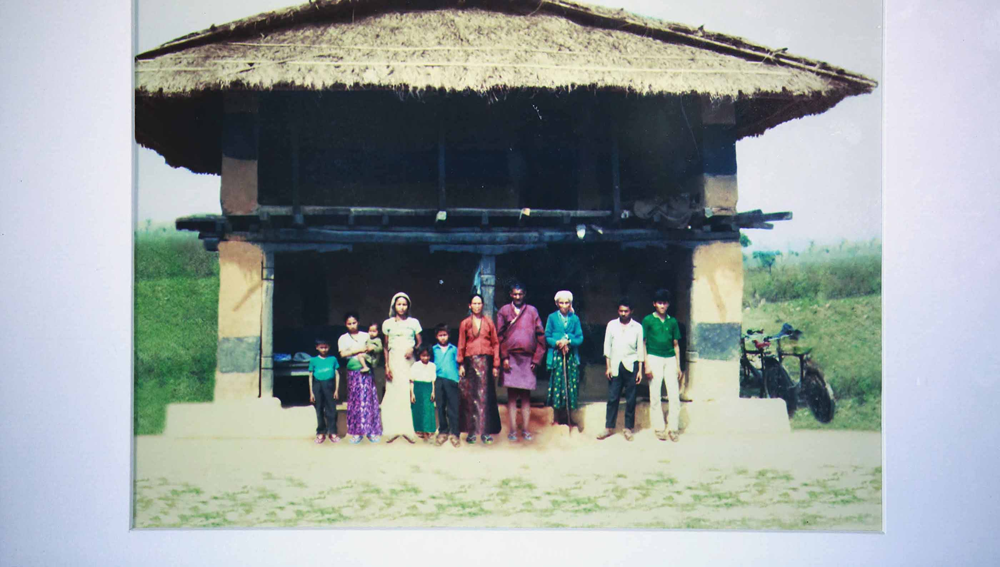

7 Days
A refugee family's first week in the US.
Birkha and Sunita Biswa and their daughters, Pranshu, 8, and Prashana, 13, are getting settled in Tukwila after years spent in a refugee camp in Bhutan.
In 1992, several generations of the Biswa family pose for a photograph at their home a month before leaving Bhutan for a refugee camp.

Family and International Rescue Committee caseworkers surround a smiling Birkha Biswa at Sea-Tac Airport in August. Biswa, with his wife and daughters, was the last of his family to be resettled in the United States from a refugee camp in Eastern Nepal. For years, he wasn't sure if he'd ever be reunited with his family again.
The family’s arrival in Tukwila was cause for much anticipation and celebration. Clockwise from top left: Leaving the airport, Branshu, 8, rides between father Birkha, right, and relative Bhagi Biswa. Dibbya Biswa, 17, runs to hug her cousins. Surrounded by family, Prashana, 13, center, and her mother Sunita Biswa, in blue, unpack their bags in Tukwila. Chatur Biswa is happy to have his son and granddaughter in the U.S. with him. Chatur works in a packing company and recently became a U.S. citizen. “Now I can say this is my country," he said. “It's a big deal for me.”
Birkha signs forms for his family at Seattle's Downtown Public Health Center.
Settling in a new country requires a lot of appointments. Left, Sunita and Birkha attend a meeting with an International Rescue Committee caseworker in SeaTac to talk about upcoming educational opportunities, including cultural orientation and job-preparedness classes. Center, a health worker measures Sunita’s height. Right, Pranshu cries after a vaccination, but her dad knows the pain is only temporary.
IRC caseworker Birendra Khadka, left, helps Birkha Biswa register Pranshu, 8, for elementary school in Tukwila.
Sunita and Birkha Biswa visit the Namaste Community Garden for the first time in Tukwila. More than 90 families have plots in the garden.
Left: Buddhi Biswa works in the Bhutanese garden in Tukwila. Many families, especially elders, produce a wide variety of vegetables, spices and fruits for their meals. Top right: Members of the Bhutanese community attend a meeting at Namaste Community Garden in Tukwila. Many are employed work for hotels, packing companies and SeaTac Airport. Bottom right: Prashana Biswa, 13, cuddles with her mother, Sunita, during their second day in the United States. They said it was colder in Seattle than they expected.
The Biswa family prays during a home church service. Half of the family are Hindu, while others are Christian and attend services several times a week.